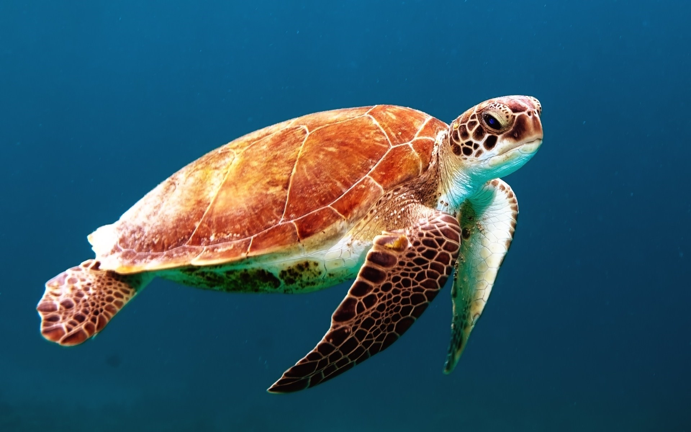
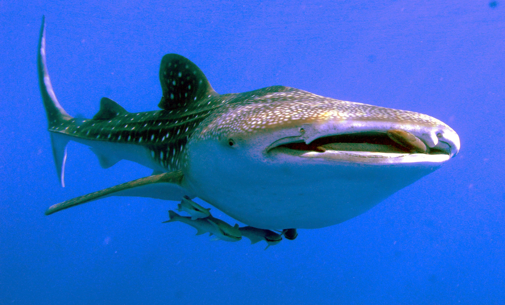
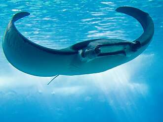
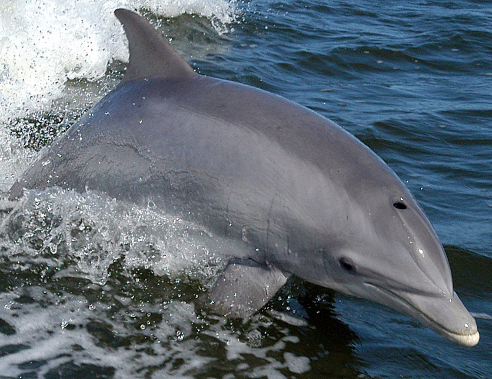

VENEZUELA'S MARINE WILDLIFE
SEA TURTLE

Venezuela's Caribbean coastline is one of the most important nesting grounds for sea turtles in South America. Three species are commonly found in these waters. The Leatherback is the largest of all sea turtles, reaching over 2 meters and feeding almost exclusively on jellyfish. The Green Turtle grazes on seagrass beds and is named for the green color of its fat. The Hawksbill, with its narrow pointed beak and beautifully patterned shell, navigates coral reefs in search of sponges. All three are critically endangered and protected under Venezuelan law.
WHALE SHARK

The Whale Shark is the largest fish in the ocean, and Venezuela's warm Caribbean waters are among the places where these gentle giants can be encountered. Despite their enormous size — adults can reach 12 meters or more — they are completely harmless filter feeders, slowly cruising through the water with their massive mouths open to collect plankton and small fish. Swimming alongside a whale shark in Venezuela's clear waters is considered one of the most unforgettable wildlife experiences on the planet.
MANTA RAY

Manta Rays are among the most graceful and intelligent creatures in Venezuela's Caribbean waters. Two species are found here — the Reef Manta, which stays close to coral reefs and cleaning stations, and the larger Oceanic Manta, which roams the open sea. Both are filter feeders with wingspans that can exceed 7 meters. One of the most spectacular sights in marine wildlife is witnessing a manta ray leap clear out of the water — a behavior scientists believe may be linked to communication or parasite removal.
BOTTLENOSE DOLPHIN

The Bottlenose Dolphin is the most commonly encountered cetacean along Venezuela's Caribbean coast, often seen riding the bow waves of boats or leaping playfully in the surf. Calves are born tail-first and immediately guided to the surface by their mothers to breathe. Adults live in dynamic pods that cooperate in sophisticated hunting strategies, herding fish into tight balls before taking turns charging through. Highly intelligent and communicative, each dolphin develops its own unique whistle signature that functions like a name among the pod.